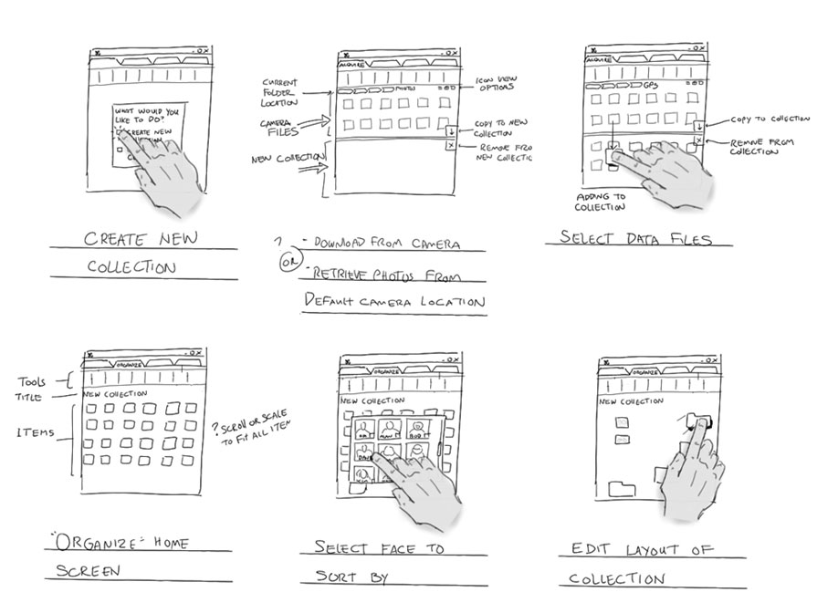

Animation
Where to start planning

https://msdn.microsoft.com/en-us/library/windows/desktop/ff800706.aspx
- In practice it is discussed at the end stages of the project
- Seen as the end icing but should be part of the design
- When everything is finished there is not much one can do to the design
-
- ...
BACK
NEXT